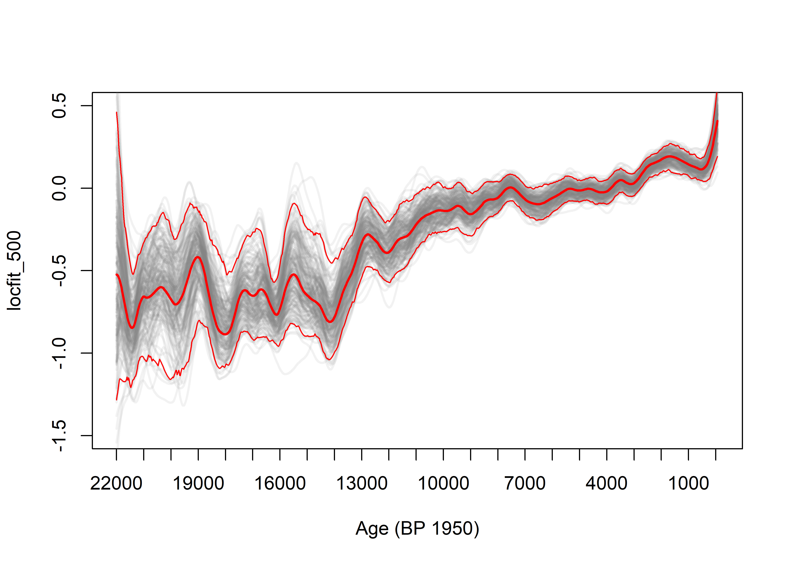

This script (smooth-curve.R) fits composite curves, with bootstrapping by site confidence intervals, using the locfit() function. This version implements a fixed window (half) width approach (as opposed to the “span”, or a constant-proportion, variable-width window). As is the case with other analysis scripts, the script has two parts, a set-up portion that changes from analysis to analysis, and a computation part that does not change. This version reads “presampled” data.
The variables queryname, basename and binname are used to compose the path and filenames for the presampled data.
# composite curve via the locfit package
# bootstrap-by-site confidence intervals
# names
queryname <- "v3i"
basename <- "zt21k"
binname <- "bw20"
# paths for input and output .csv files -- modify as appropriate
datapath <- "/Projects/GPWG/GPWGv3/GCDv3Data/v3i_Rscripts/"
sitelistpath <- "/Projects/GPWG/GPWGv3/GCDv3Data/v3i_RScripts/v3i_sitelists/"
sitelist <- "v3i_nsa_globe"
outpath <- "e:/Projects/GPWG/GPWGv3/data/v3i_Rscripts/v3i_curves/"
# presampled/binned files
csvpath <- "/Projects/GPWG/GPWGv3/GCDv3Data/v3i_Rscripts/v3i_presamp_csv/"
csvname <- paste("_presamp_influx_",basename,"_",binname,".csv", sep="")Load the locfit library and set parameters. The window width hw is, following convention, the half-window width (of the tricube weight function). The number of bootstrap resampling replications is given by nreps.
library(locfit)## locfit 1.5-9.1 2013-03-22# locfit (half) window-width parameter
hw <- 500 # bandwidth (smoothing parameter)
# number of bootstrap samples/replications
nreps <- 200Set the target ages for fitted values.
# target ages for fitted values
targbeg <- -60
targend <- 22000
targstep <- 20Set array sizes for saving bootstrap results.
# array sizes
maxrecs <- 2000
maxreps <- 1000The composite curve and individual bootstrap curves can take a long time to plot. The output can be redirected to a .pdf file by setting plotout to pdf. (Set to screen to plot the usual way.)
# plot output
plotout <- "screen" # "screen" # "pdf" Set various output paths and filenames.
# no changes below here
# site list file
sitelistfile <- paste(sitelistpath, sitelist, ".csv", sep="")
sitelistfile## [1] "/Projects/GPWG/GPWGv3/GCDv3Data/v3i_RScripts/v3i_sitelists/v3i_nsa_globe.csv"# curve (output) path and file
curvecsvpath <- paste(datapath,queryname,"_curves/",sep="")
# if output folder does not exist, create it
dir.create(file.path(datapath, paste(queryname,"_curves/",sep="")), showWarnings=FALSE)
curvefile <- paste(sitelist,"_locfit_",basename,"_",binname,"_",as.character(hw),"_",
as.character(nreps), ".csv", sep="")
print(curvecsvpath)## [1] "/Projects/GPWG/GPWGv3/GCDv3Data/v3i_Rscripts/v3i_curves/"print(curvefile)## [1] "v3i_nsa_globe_locfit_zt21k_bw20_500_200.csv"Code block to implement writing .pdf to file:
# .pdf plot of bootstrap iterations
if (plotout == "pdf") {
pdffile <- paste(sitelist,"_locfit_",basename,"_",binname,"_",as.character(hw),"_",
as.character(nreps),".pdf", sep="")
print(pdffile)
}Read the list of sites to be processed. Note that this is the site list may contain sites that after transforming and presampling may have no useful data. Those sites are ignored when the data are read in.
# read the list of sites
sites <- read.csv(sitelistfile)
head(sites)## Site_ID Lat Lon Elev depo_context Site_Name
## 1 1 44.6628 -110.6161 2530 LASE Cygnet
## 2 2 44.9183 -110.3467 1884 LASE Slough Creek Pond
## 3 3 45.7044 -114.9867 2250 LASE Burnt Knob
## 4 4 45.8919 -114.2619 2300 LASE Baker
## 5 5 46.3206 -114.6503 1770 LASE Hoodoo
## 6 6 45.8406 -113.4403 1921 LASE Pintlarns <- length(sites[,1]) #length(sites$ID_SITE)
ns## [1] 703Define arrays for data, fitted values and statistics.
# arrays for data and fitted values
age <- matrix(NA, ncol=ns, nrow=maxrecs)
influx <- matrix(NA, ncol=ns, nrow=maxrecs)
nsamples <- rep(0, maxrecs)
targage <- seq(targbeg,targend,targstep)
targage.df <- data.frame(x=targage)
lowage <- targage - hw; highage <- targage + hw
ntarg <- length(targage)
yfit <- matrix(NA, nrow=length(targage.df$x), ncol=maxreps)
# arrays for sample number and effective window span tracking
ndec <- matrix(0, ncol=ntarg, nrow=ns)
ndec_tot <- rep(0, ntarg)
xspan <- rep(0, ntarg)
ninwin <- matrix(0, ncol=ntarg, nrow=ns)
ninwin_tot <- rep(0, ntarg)Read and store data. Note that sites without data, even if in the site list, are skipped using the file.exists() function.
# read and store the presample (binned) files as matrices of ages and influx values
ii <- 0
for (i in 1:ns) {
#i <- 1
sitenum <- sites[i,1] # sites$ID_SITE[i]
print(sitenum)
siteidchar <- as.character(sitenum)
if (sitenum >= 1) siteid <- paste("000", siteidchar, sep="")
if (sitenum >= 10) siteid <- paste("00", siteidchar, sep="")
if (sitenum >= 100) siteid <- paste("0", siteidchar, sep="")
if (sitenum >= 1000) siteid <- paste( siteidchar, sep="")
inputfile <- paste(csvpath, siteid, csvname, sep="")
print(inputfile)
if (file.exists(inputfile)) {
indata <- read.csv(inputfile)
nsamp <- length(indata$age) #
if (nsamp > 0) {
ii <- ii+1
age[1:nsamp,ii] <- indata$age #
influx[1:nsamp,ii] <- indata$zt #
nsamples[ii] <- nsamp
}
}
}
nsites <- iiNumber of sites with data.
# number of sites with data
nsites## [1] 693As the presample files are read, individual files will be listed:
## [1] 1
## [1] "/Projects/GPWG/GPWGv3/GCDv3Data/v3plus/v3plus_presamp_csv/0001_presamp_influx_zt-lme_bw10.csv"
## ...Trim the input data to an appropriate range given the target ages, and censor (set to NA) any tranformed influx values greater than 10.
# trim samples to age range
influx[age >= targend+hw] <- NA
age[age >= targend+hw] <- NA
# censor abs(influx) values > 10
influx[abs(influx) >= 10] <- NA
age[abs(influx) >= 10] <- NAThe number of sites with samples (ndec_tot) and the number of samples (ninwin_tot) that contribute to each fitted value are calculated, along with the effective window width or “span”. This code is clunky, but parallels that in the Fortran versions.
# count number of sites that contributed to each fitted value
ptm <- proc.time()
for (i in 1:ntarg) {
agemax <- -1e32; agemin <- 1e32
for (j in 1:nsites) {
for (k in 1:nsamples[j]) {
if (!is.na(age[k,j])) {
ii <- (age[k,j]-targage[1])/targstep + 1
#print (c(i,j,k,ii))
if (ii > 0 && ii <= ntarg) {ndec[j,ii] = 1}
if (age[k,j] >= targage[i]-hw && age[k,j] <= targage[i]+hw) {
ninwin[j,i] = 1
if (agemax < age[k,j]) {agemax <- age[k,j]}
if (agemin > age[k,j]) {agemin <- age[k,j]}
}
}
}
}
ndec_tot[i] <- sum(ndec[,i])
ninwin_tot[i] <- sum(ninwin[,i])
xspan[i] <- agemax - agemin
}
proc.time() - ptm## user system elapsed
## 66.5 0.0 66.5#head(cbind(targage,ndec_tot,xspan,ninwin_tot))First, the overall composite curve, i.e. without bootstrapping, determined and saved for plotting over the individual bootstrap curves later. Second, the nreps individual bootstrap samples are selected, and a composit curve fitted to each and saved.
The steps in getting this curve include:
age and influx) into vectorslocfit(), andThe composite curve using all data is calculated as follows:
ptm <- proc.time()
# 1. reshape matrices into vectors
x <- as.vector(age)
y <- as.vector(influx)
lfdata <- data.frame(x,y)
lfdata <- na.omit(lfdata)
x <- lfdata$x; y <- lfdata$y
# 2. locfit
# initial fit, unresampled (i.e. all) data
loc01 <- locfit(y ~ lp(x, deg=1, h=hw), maxk=800, family="qrgauss")
summary(loc01)## Estimation type: Local Regression
##
## Call:
## locfit(formula = y ~ lp(x, deg = 1, h = hw), maxk = 800, family = "qrgauss")
##
## Number of data points: 72849
## Independent variables: x
## Evaluation structure: Rectangular Tree
## Number of evaluation points: 65
## Degree of fit: 1
## Fitted Degrees of Freedom: 18.926# 3. get fitted values
pred01 <- predict(loc01, newdata=targage.df, se.fit=TRUE)
loc01_fit <- data.frame(targage.df$x, pred01$fit)
fitname <- paste("locfit_",as.character(hw), sep="")
colnames(loc01_fit) <- c("age", fitname)
head(loc01_fit)## age locfit_500
## 1 -60 0.4070768
## 2 -40 0.3887663
## 3 -20 0.3705485
## 4 0 0.3524964
## 5 20 0.3346828
## 6 40 0.3171808proc.time() - ptm## user system elapsed
## 2.48 0.06 2.55The bootstrap confidence intervals are obtained by sampling with replacement sites (as opposed to individual samples), fitting a composite curve using locfit(), and saving these. The 95-percent confidence intervals are then determined for each target age using the quantile() function.
# bootstrap samples
ptm <- proc.time()
# Step 1 -- Set up to plot individual replications
if (plotout == "pdf") {pdf(file=paste(curvecsvpath,pdffile,sep=""))}
plot(x, y, xlab="Age (BP 1950)", ylab=fitname, xlim=c(22000,-100), xaxp = c(22000, 0, 22), ylim=c(-1.5,0.5), type="n")
# Step 2 -- Do the bootstrap iterations, and plot each composite curve
set.seed(10) # do this to get the same sequence of random samples for each run
for (i in 1:nreps) {
print(i)
randsitenum <- sample(seq(1:nsites), nsites, replace=TRUE)
# print(head(randsitenum))
x <- as.vector(age[,randsitenum])
y <- as.vector(influx[,randsitenum])
lfdata <- data.frame(x,y)
lfdata <- na.omit(lfdata)
x <- lfdata$x; y <- lfdata$y
locboot <- locfit(y ~ lp(x, deg=1, h=hw), maxk=800, maxit=20, family="qrgauss")
predboot <- predict(locboot, newdata=targage.df, se.fit=TRUE)
yfit[,i] <- predboot$fit
# note plotting lines is slowww
lines(targage.df$x, yfit[,i], lwd=2, col=rgb(0.5,0.5,0.5,0.10))
if (i %% 10 == 0) {print(i)}
}
# Step 3 -- Plot the unresampled (initial) fit
fitname <- paste("locfit_",as.character(hw), sep="")
colnames(loc01_fit) <- c("age", fitname)
lines(loc01_fit[,1], loc01_fit[,2], lwd=2, col="red")
# Step 4 -- Find and add bootstrap CIs
yfit95 <- apply(yfit, 1, function(x) quantile(x,prob=0.975, na.rm=T))
yfit05 <- apply(yfit, 1, function(x) quantile(x,prob=0.025, na.rm=T))
lines(targage.df$x, yfit95, lwd=1, col="red")
lines(targage.df$x, yfit05, lwd=1, col="red")
if (plotout == "pdf") {dev.off()}The fitted curves are written out in the usual way.
curveout <- data.frame(cbind(targage.df$x, pred01$fit, yfit95, yfit05, ndec_tot, xspan, ninwin_tot))
colnames(curveout) <- c("age", "locfit", "cu95", "cl95", "nsites", "window", "ninwin")
outputfile <- paste(curvecsvpath, curvefile, sep="")
write.table(curveout, outputfile, col.names=TRUE, row.names=FALSE, sep=",")
proc.time() - ptm## user system elapsed
## 300.97 26.00 327.28After fitting, it would be good to check for locfit() warnings (i.e. warnings()).